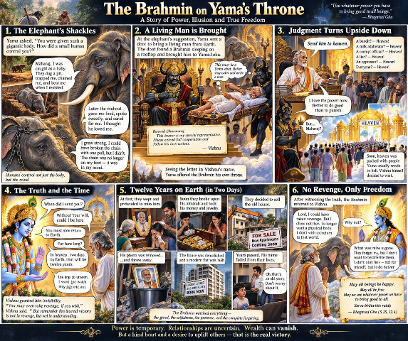

একটি হাতি, একটি চিঠি, আর একদিনের রাজত্ব — ক্ষমতা মানুষকে কতটা বদলে দেয়, তারই এক ব্যঙ্গ-কাহিনি।
যমালয়ে সেদিন যমরাজের দরবার বসেছে। একের পর এক মৃত আত্মা আসছে, আর যমরাজ তাদের জীবনের হিসাব শুনছেন।
এমন সময় এক বিশাল হাতিকে যমদূত নিয়ে এল।
যমরাজ হাতিটির দিকে তাকিয়ে বললেন — "হ্যাঁ রে! তোকে এত বড় একটা প্রকাণ্ড শরীর দিয়ে পৃথিবীতে পাঠানো হলো, আর তুই মানুষের বশ হলি কী করে? তোর একটা পায়ের সমান মানুষ, সেই ছোট্ট মানুষটা তোকে নিজের ইচ্ছেমতো চালাত?"
হাতি কিছুক্ষণ চুপ করে রইল। তারপর বলল —
"মহারাজ, আমার শরীর বড় হলেও আমার গল্পটা ছোটবেলা থেকেই শুরু।"
যমরাজ বললেন — "শোনাই।"
হাতি বলল — "আমি যখন ছোট ছিলাম, তখন মানুষ আমাকে ফাঁদ পেতে ধরেছিল। মাটিতে গভীর গর্ত খুঁড়ে তার ওপর পাতা দিয়ে ঢেকে রেখেছিল। আমি বুঝতে পারিনি। পা পড়তেই গর্তে পড়ে গেলাম।"
"তারপর আমাকে নিয়ে যাওয়া হলো। দড়ি দিয়ে বাঁধা হলো, শিকল পরানো হলো। পালাতে চাইলে মার খেতে হতো। আমি ছোট ছিলাম। শিকল ছিঁড়তে পারতাম না।"
যমরাজ জিজ্ঞেস করলেন — "তারপর মাহুত?"
হাতি বলল — "হ্যাঁ। মাহুত প্রথমে আমাকে অত্যাচার করত। কিন্তু পরে সে আমার কাছে খাবার আনত, জল দিত, মাথায় হাত বুলিয়ে দিত। অসুস্থ হলে দেখাশোনা করত। আমি ভাবলাম, এই মানুষটাই আমাকে ভালোবাসে।"
হাতি একটু থামল।
"কিন্তু মহারাজ, ভালোবাসার সঙ্গে তার হাতে ছিল নিয়ন্ত্রণের লাঠিও। আমি বড় হতে লাগলাম। একদিন বুঝলাম, ছোটবেলায় যে শিকল দিয়ে আমাকে বাঁধা হতো, এখন আমি চাইলে এক টানেই সেটা ছিঁড়ে ফেলতে পারি।"
যমরাজ অবাক হয়ে বললেন — "তাহলে ছিঁড়িসনি কেন?"
হাতি মাথা নিচু করল।
"কারণ তখন শিকলটা আমার পায়ে ছিল না।"
যমরাজ বললেন — "তাহলে কোথায় ছিল?"
হাতি ধীরে ধীরে বলল — "আমার মনে।"
দরবার নিস্তব্ধ।
হাতি বলল — "মহারাজ, মানুষ আমার শরীরকে নয়, আমার বিশ্বাসকে বশ করেছিল। আর মানুষ শুধু হাতিকে নয়। মানুষের মধ্যেও অনেককে ছোটবেলার ভয়, অভ্যাস, লোভ আর সামাজিক শিকল দিয়ে বেঁধে রাখে।"
যমরাজ দীর্ঘশ্বাস ফেললেন।
হাতি মুচকি হেসে বলল — "আপনার এখানে তো সব মানুষ মরে আসে। একবার একটা জীবন্ত মানুষকে এনে দেখুন। বুঝবেন মানুষ কত সাংঘাতিক।"
যমরাজ সঙ্গে সঙ্গে যমদূতকে আদেশ দিলেন — "যা। পৃথিবী থেকে একজন জীবন্ত মানুষ নিয়ে আয়।"
যমদূত পৃথিবীতে নেমে এল। অনেক খোঁজার পর এক গরমের রাতে একটি বাড়ির ছাদে সে একজন ব্রাহ্মণকে খাটে কিছু লিখতে লিখতে ঘুমিয়ে পড়েছিল। যমদূত খাটসহ ব্রাহ্মণকে তুলে নিল।
মাঝপথে ব্রাহ্মণের ঘুম ভেঙে গেল। সে চোখ মেলে দেখল — সে আকাশে উড়ছে! খাট কাঁধে নিয়ে কতোগুলি অদ্ভুত চেহারার লোক তাকে তুলে নিয়ে যাচ্ছে। ব্রাহ্মণ বুঝল — এরা নিশ্চয় যমদূত। সে ভয় পেল, কিন্তু চিৎকার করল না।
সে ভাবল — "এখন চেঁচালে যদি খাট থেকে পড়ে যাই, তাহলে এখান থেকে পড়ে মরে যাবে।"
সে তার কাছে থাকা একটি কাগজে খচখচ করে কিছু লিখল। তারপর কাগজটি পকেটে রেখে আবার চোখ বন্ধ করে শুয়ে পড়ল। যমদূতরা কিছুই বুঝতে পারল না।
ভোরে তারা যমালয়ে পৌঁছল। যমদূতরা তাকে খাট থেকে নামিয়ে দিল। ব্রাহ্মণ উঠে দাঁড়িয়ে পকেট থেকে একটি চিঠি বের করল।
"এটা ধর্মরাজকে দিন।"
যমরাজ চিঠিটি খুললেন। তাতে লেখা —
"প্রিয় ধর্মরাজ, এই পত্রবাহক আমার বিশেষ প্রতিনিধি। আপনার প্রশাসনিক কাজে তাকে সহযোগিতা করবেন এবং তার নির্দেশ পালন করবেন। — বিষ্ণু"
যমরাজ চিঠি পড়ে থমকে গেলেন। বিষ্ণুর নাম! তিনি তাড়াতাড়ি সিংহাসন থেকে উঠে দাঁড়িয়ে বললেন —
"আসুন মহাশয়! আপনি সিংহাসনে বসুন।"
ব্রাহ্মণ ধীরে ধীরে সিংহাসনে গিয়ে বসল। হাতি দূর থেকে সব দেখছিল। সে মনে মনে বলল —
"মানুষ সত্যিই সাংঘাতিক!"
যমদূত একজন ডাকাতকে নিয়ে এল।
"মহারাজ, বহু মানুষকে লুট করেছে, কয়েকজনকে হত্যা করেছে।"
ব্রাহ্মণ বলল — "স্বর্গে পাঠিয়ে দাও।"
যমদূত থমকে গেল — "স্বর্গে?"
"হ্যাঁ। পরের জন।"
এবার এল ভেজাল দুধ বিক্রেতা — "বহু মানুষকে অসুস্থ করেছে।" "স্বর্গে পাঠিয়ে দাও।"
এল মিথ্যা সাক্ষী — "বহু নিরপরাধ মানুষকে ফাঁসিয়েছে।" "স্বর্গে পাঠিয়ে দাও।"
দুর্নীতিবাজ কর্মকর্তা — "স্বর্গ।" ঘুষখোর — "স্বর্গ।" অত্যাচারী জমিদার — "স্বর্গ।" মানুষ ঠকানো ব্যবসায়ী — "স্বর্গ।"
যমদূত শেষে আর কিছু জিজ্ঞাসাই করল না। শুধু ফাইল আনছে। আর ব্রাহ্মণ বলছে — "স্বর্গে পাঠিয়ে দাও।"
যমরাজ অসহায়ভাবে দাঁড়িয়ে। কারণ চিঠিতে তো বিষ্ণুর নির্দেশ!
এদিকে স্বর্গের দরজায় লাইন লেগে গেল। দেবতারা অবাক। নারদ দৌড়ে এসে বিষ্ণুকে বললেন —
"প্রভু! স্বর্গে এমন ভিড় কখনো দেখিনি!"
বিষ্ণু বললেন — "কারা আসছে?"
নারদ বললেন — "যাদের সাধারণত স্বর্গে আসার কথা নয়।"
বিষ্ণু অবাক — "কোথা থেকে?"
"যমালয় থেকে।"
বিষ্ণু বললেন — "এবার আমাকে নিজেই যেতে হবে।"
বিষ্ণু যমালয়ে এসে দেখলেন, যমরাজ দাঁড়িয়ে আর এক ব্রাহ্মণ তাঁর সিংহাসনে বসে।
বিষ্ণু বললেন — "ধর্মরাজ, এ কী হচ্ছে?"
যমরাজ বললেন — "প্রভু, আমি কিছু করছি না। আপনার পত্র দেওয়া পাঠানো লোকই সব সিদ্ধান্ত নিচ্ছে।"
বিষ্ণু ব্রাহ্মণের দিকে তাকিয়ে বললেন — "আমি তোমাকে কবে পাঠালাম?"
ব্রাহ্মণ বলল — "প্রভু, আপনার ইচ্ছা ছাড়া কি আমি এখানে আসতে পারি?"
বিষ্ণু বললেন — "কিন্তু আমি তোমাকে তো কোনো পত্র লিখিনি।"
ব্রাহ্মণ বলল — "চিঠিতে আপনার নাম আছে। আপনি না চাইলে তো আপনার নাম ব্যবহার করে কোনো কাজ হওয়ার কথা নয়!"
বিষ্ণু মৃদু হেসে বললেন — "তুমি সবাইকে স্বর্গে পাঠাচ্ছ কেন?"
ব্রাহ্মণ বলল — "কারণ আমার হাতে ক্ষমতা এসেছে।"
"ক্ষমতা মানেই সবাইকে ছেড়ে দেওয়া?"
"না। কিন্তু ক্ষমতা অল্পদিনের জন্য পাওয়া গেলে আমি সেটা দিয়ে কাউকে দুঃখ দেওয়ার বদলে সবার ভালো করতে চাই।"
বিষ্ণু চুপ করে রইলেন।
ব্রাহ্মণ বলল — "পৃথিবীতে মানুষ চেয়ারে বসার আগে বলে — 'আমি সেবা করব।' চেয়ারে বসার পর বলে — 'আমার অনুমতি ছাড়া কিছু হবে না।' আর চেয়ার চলে গেলে বলে — 'আমাকে কেউ সুযোগ দিল না।'"
হাতি হেসে উঠল। যমরাজও মুখ লুকিয়ে হাসলেন।
বিষ্ণু বললেন — "তোমাকে পৃথিবীতে ফিরতে হবে।"
ব্রাহ্মণ বলল — "কতদিন?"
বিষ্ণু বললেন — "স্বর্গের দুই দিন।"
ব্রাহ্মণ বলল — "তারপর?"
বিষ্ণু বললেন — "তুমি পৃথিবীতে ফিরে যাবে।"
কিন্তু বিষ্ণু তখনও তাকে বলেননি — স্বর্গের দুই দিন পৃথিবীর বারো বছর।
স্বর্গে দ্বিতীয় দিন শেষ হলো। বিষ্ণু ব্রাহ্মণকে অদৃশ্য করে পৃথিবীতে পাঠালেন। পৃথিবীতে তখন কেটে গেছে ১২ বছর।
ব্রাহ্মণ নিজের বাড়িতে গেল। কেউ তাকে দেখতে পাচ্ছে না। আগের ঘটনাগুলি সে সব দেখতে পাচ্ছে। তার চলে যাবার পর, প্রথমে তার পরিবার তাকে নিয়ে কাঁদছে। তার খুব দুঃখ হলো এই দৃশ্য দেখে। কিন্তু কিছুক্ষণ পরই সেই কান্নার আড়ালে অন্য আলোচনা শুরু হলো।
ছেলে বলল — "বাবার আলমারিটা খুলতে হবে।"
বৌমা বলল — "টাকা-পয়সা কত আছে দেখে নেওয়া দরকার।"
মেয়ে বলল — "গয়নাগুলোও তো ভাগ হবে।"
ব্রাহ্মণ স্তব্ধ হয়ে গেলেন।
তারপর দেখলেন — আলমারির তালা ভাঙা হচ্ছে। টাকা বের হচ্ছে। সোনার গয়না বের হচ্ছে। পুরনো কাগজপত্র ছড়িয়ে পড়ছে। যে মানুষটি তাদের জন্য জীবনভর সঞ্চয় করেছিলেন, তাঁর অনুপস্থিতিতেই তাঁর সম্পত্তির ভাগাভাগি শুরু হয়ে গেছে।
কিন্তু বাইরে প্রতিবেশীদের সামনে — ছেলের চোখে জল। বৌমার মুখে কান্না।
মেয়ে বলছে — "বাবা কোথায় গেলেন জানি না! শুধু চাই, বাবা একবার ফিরে আসুন।"
ব্রাহ্মণ সব শুনছেন। কিন্তু কেউ জানে না, বাবা ঠিক তাদের পাশেই দাঁড়িয়ে আছেন।
তারপর একদিন ছেলে বলল — "এই পুরনো বাড়ি রেখে কী হবে? প্রোমোটারের সঙ্গে কথা বলেছি। কয়েকদিনের মধ্যেই বাড়ি ভেঙে ফেলা হবে।"
ব্রাহ্মণ চমকে উঠলেন — "আমার বাড়ি?"
বাড়ি ভেঙে ফেলা হলো। যে ঘরে তাঁর সন্তানরা বড় হয়েছিল, সেটি মাটির সঙ্গে মিশে গেল। তার জায়গায় উঠল বহুতল। তারপর ফ্ল্যাট বিক্রি হলো। টাকা ভাগ হলো। বছর কেটে গেল।
এরপর ব্রাহ্মণ শুনলেন তাঁর নাতি জিজ্ঞেস করছে — "বাবা, আমাদের দাদু কেমন ছিলেন?"
ছেলে কিছুক্ষণ চুপ করে বলল — "ওসব পুরনো কথা। এখন এসব মনে রেখে কী হবে?"
ব্রাহ্মণ বুঝলেন — মানুষ তাকে ভুলে গেছে। শুধু তাঁর সম্পত্তি ভুলেনি।
অদৃশ্য ব্রাহ্মণের হাতে তখন এক অদ্ভুত শক্তি। সে চাইলে ঘরের দরজা বন্ধ করতে পারে। আলমারি খুলে দিতে পারে। টাকা ছড়িয়ে দিতে পারে। রাতে পরিবারের স্বপ্নে গিয়ে ভয় দেখাতে পারে। চাইলে তাদের জীবন ওলটপালট করে দিতে পারে।
এক রাতে সে ছেলের সামনে দাঁড়াল। ছেলে টেবিলে বসে টাকা গুনছে। ব্রাহ্মণ হাত বাড়াল।
এক মুহূর্তের জন্য তার মনে হলো — "সব টাকা ছড়িয়ে দিই।"
তারপর হাত সরিয়ে নিল।
মনে হলো — "আমি যদি প্রতিশোধ নিই, তাহলে ওদের থেকে আমার পার্থক্য কোথায়?"
সে আকাশের দিকে তাকিয়ে বলল — "ভগবান বিষ্ণু!"
বিষ্ণু আবির্ভূত হলেন।
"ফিরে এসো।"
ব্রাহ্মণ বললেন — "আমি প্রস্তুত।"
যমালয়ে ফিরে বিষ্ণু বললেন —
"এবার তোমাকে একটি নতুন শরীর দিতে পারি। আবার পৃথিবীতে জন্ম নিতে পারো।"
ব্রাহ্মণ মাথা নাড়লেন — "না প্রভু।"
"কেন?"
"শরীর নিয়ে পৃথিবীতে গিয়েছিলাম। শরীর ছাড়ার পর বুঝলাম, মানুষ আমাকে ছাড়াই বাঁচতে পারে। আবার শরীর নিয়ে ফিরে গিয়ে কী হবে?"
বিষ্ণু বললেন — "তুমি কি তোমার পরিবারকে ক্ষমা করেছ?"
ব্রাহ্মণ বললেন — "ক্ষমা করেছি কিনা জানি না। কিন্তু তাদের জন্য আর কোনো অমঙ্গল চাই না।"
বিষ্ণু মৃদু হেসে বললেন — "তাহলে তুমি সত্যিই বদলেছ।"
হাতি পাশে দাঁড়িয়ে বলল — "মহারাজ, এবার আমার কথাটা বুঝলেন তো?"
যমরাজ বললেন — "কোন কথা?"
হাতি বলল — "আমার পায়ের শিকল ছিল বাইরে। পরে সেটা মনে চলে গিয়েছিল। আর এই ব্রাহ্মণের শিকল ছিল পরিবার, সম্পত্তি আর প্রতিশোধের মধ্যে। কিন্তু সে শেষ পর্যন্ত সব শিকল ছিঁড়ে ফেলেছে।"
বিষ্ণু বললেন — "শরীরের শক্তি বড় নয়। নিজের লোভ, রাগ আর প্রতিশোধকে জয় করার শক্তিই আসল শক্তি।"
ব্রাহ্মণ পৃথিবীর দিকে শেষবার তাকালেন। সেখানে তাঁর পুরনো বাড়ি নেই। ছবি নেই। আলমারি নেই। টাকা নেই। গয়না নেই। এমনকি তাঁর নামও প্রায় নেই। কিন্তু এবার তাঁর মনে কোনো কষ্ট রইল না।
তিনি বললেন — "যা কিছু আমার ছিল, সবই তো সাময়িক ছিল। এখন আমি শুধু চাই — যত জীব আছে, তাদের মঙ্গল হোক।"
বিষ্ণু তাঁর দিকে তাকিয়ে বললেন — "সর্বভূতহিতে রতঃ — এই কথাটাই তুমি শেষ পর্যন্ত বুঝেছ।"
দূরে হাতি মৃদু হেসে বলল — "মহারাজ, এবার কি আমি স্বর্গে যাব?"
যমরাজ বললেন — "তুই তো অনেক আগেই স্বর্গের যোগ্য ছিলি!"
হাতি বলল — "তাহলে মানুষের ওপর আর রাগ নেই?"
যমরাজ হেসে বললেন — "না। তবে জীবন্ত মানুষকে আর কখনো এখানে এনে পরীক্ষা করব না!"
সবাই হেসে উঠল। আর বিষ্ণুর সঙ্গে ব্রাহ্মণ ধীরে ধীরে আলোর দিকে এগিয়ে গেলেন।
পৃথিবীতে তার বাড়ি হারিয়েছিল। কিন্তু শেষ পর্যন্ত সে নিজের মনটাকে হারাতে দেয়নি। সেটাই ছিল তার সবচেয়ে বড় জয়।